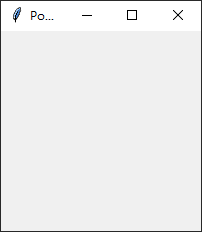
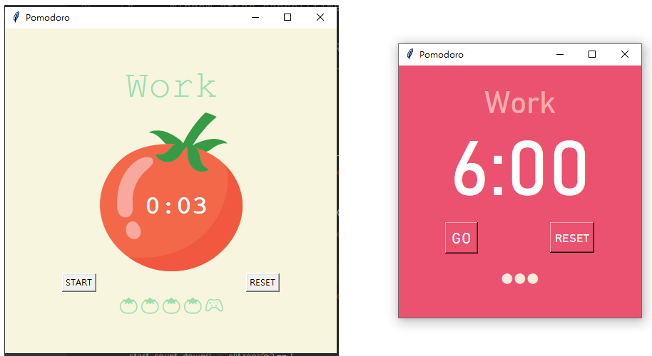
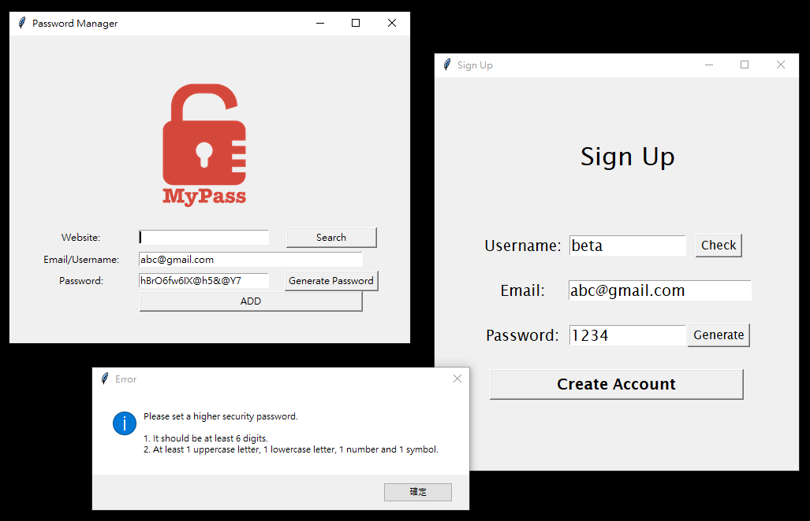
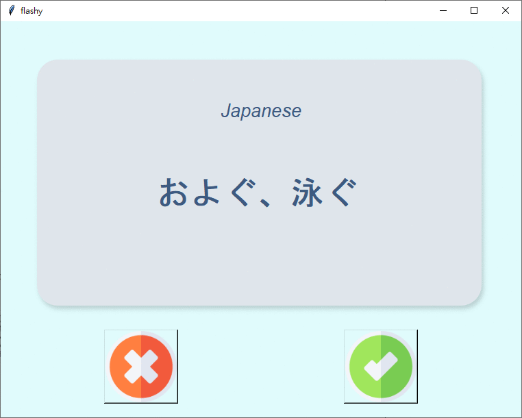

Python tkinter圖形介面使用筆記

這一個多禮拜都在學習和研究使用Python內建的tkinter套件/模組，剛開始學的幾堂課對於tkinter的文件的難讀性感到非常的挫折，為什麼看起來這麼龐大、這麼複雜、這麼難看懂？！？！老實說學這部分的前兩天我被嚇壞了XD，可以點一下下面的連結感受一下這種恐懼：
還好後來硬著頭皮跟著上課進度從幾個基本指令開始實作熟悉，加上跟著實作project時Google尋找關鍵字才一點一滴的開始理解和熟悉基本的功能。 這一周的幾個Project做完我就在思考應該需要有額外的練習來複習和活用學到的東西，或許也可以寫篇文章整理這些基本功能，當作是給未來的自己一個快速回復記憶的筆記。
tkinter 是什麼？
它是一個Python內建的GUI module(圖形使用者介面模組)，可以在不用額外安裝套件的情況下，用Python來寫圖像化的使用介面，幾個入門的基本功能如下列：
建立一個圖形介面視窗
from tkinter import *
window = Tk()
window.title("Pomodoro")
window.mainloop()
程式中的最後一行需要加.mainloop()，讓圖形視窗可以一直開啟。以上幾行會產生一個小視窗： 
常用的幾種widgets
| 類別 | Class | Attributes 屬性設定 (僅列出各類別我常用的設定) | 備註 |
|---|---|---|---|
| 文字標籤 | Label() | fg=文字顏色, bg=背景顏色, font=(字體, 大小, 粗斜體) | |
| 文字輸入框 | Entry() | width=文字框寬度, font=(字體, 大小, 粗斜體) | |
| 按鈕 | Button() | text=文字, fg=文字顏色, bg=背景顏色, font=(字體, 大小, 粗斜體), pady=上下留白, command=指令函數 | |
| 畫布 | Canvas() | width=畫布寬度, height=畫布高度, highlightthickness=邊框粗細 | |
| 載入圖片 | PhotoImage() | file=圖片路徑 | 需先設定為variable供後續使用 |
Canvas類別的各種方法
| Method/方法 | 說明 | Attributes 屬性設定 | 備註 |
|---|---|---|---|
| .create_text | 在畫布中加入文字 | text=文字, fill=文字顏色, font=字體設定 | 這邊文字顏色的是用fill不是fg喔！ |
| .create_image | 在畫布中放圖片 | x, y, image=圖檔的變數 | 第一組需要先設定圖片在畫布中顯示的座標位置，(0, 0)是左上角，往畫布中間的座標數值皆為正數 |
其他更多方法，很多我都還沒用過，請看說明文件
中文圖解版的詳細說明可以參考這篇：台部落 - Tkinter 組件詳解（十二）：Canvas
特殊注意事項
以上的widgets叫出各類別設定為variable以後，需要設定布局.pack()或.place()或.grid()才會在GUI中出現，這三種顯示/布局方法只能選定一種，不能混用！
.grid(row=x, column=y)是我最習慣使用的。
關於以上三種布局的差別這邊有篇文章寫得蠻清楚的，忘記可以看一下XD
實作範例
用本篇主圖Gif檔案中的UI設定做為範例，程式碼如下：
from tkinter import *
window = Tk()
window.title("Pomodoro")
window.config(padx=40, pady=20, bg=BG_COLOR)
# --- Theme color and set Time text at the center ---
canvas = Canvas(width=260, height=200, bg=BG_COLOR, highlightthickness=0)
timer_text = canvas.create_text(130, 120, text="00:00", fill="white", font=(FONT_NAME, 80, "normal"))
canvas.grid(column=0, row=1, columnspan=3)
# Other widgets
timer_label = canvas.create_text(130, 30, text="Timer", fill=YELLOW, font=(FONT_NAME, 32))
start_btn = Button(text="GO", fg="white", bg=BG_COLOR, font=(FONT_NAME, 16), command=start_count_down)
start_btn.grid(column=0, row=2)
reset_btn = Button(text="RESET", fg="white", bg=BG_COLOR, font=(FONT_NAME, 12), pady=6, command=reset_timer)
reset_btn.grid(column=2, row=2)
checked_mark = Label(fg=YELLOW, bg=BG_COLOR, font=(FONT_NAME, 10), height=4)
checked_mark.grid(column=0, row=3, columnspan=3)
會使用以上幾種基礎的widgets就夠用來製作各種小工具了！以下列出幾個課程練習的projects：
Pomodoro App
這個小App算是目前為止做的最實用的，最近幾天在家的時間幾乎都打開它用番茄鐘工作法來學習，左圖是課程中的教材實作，右邊的極簡版是我花了一個下午自己設計的XD 
註冊頁面與密碼管理工具
左邊是課程作業，右邊是我另外運用目前為止學的東西，做了一個可以簡單檢查帳號、email、密碼和生成密碼的註冊頁面，如果有錯誤就會跳出通知。 
Flashcard App
這個做起來不難，主要在複習如何用pandas module去處理csv檔案的資料、儲存學習進度，也花了一些時間弄懂.after(xms, func)的用法，以及設計和串接讓按一次按鈕可以同時執行2個function。 配色和按鈕的UI部分我依樣有做一些依照自己喜好的小調整，我發現挑顏色、把版面做漂亮簡潔(我主觀喜好的XD)是做project的樂趣之一，常常調一調一兩個小時就過去了XD。 
動手做，忘記就查
這篇文章我寫了大約一個禮拜，從一開始覺得很複雜，到實際動手做了幾個project以後越來越熟悉，花時間整理歸納或許也有幫助，但最重要的結論就是技術文件再長細節再多都別怕，善用Google搜尋、文件搜尋，有用到再查慢慢吸收即可，重點是實際使用、測試，根本不需要一開始就把落落長的文件看完🤣，常用的幾種查個兩三次也差不多熟了。